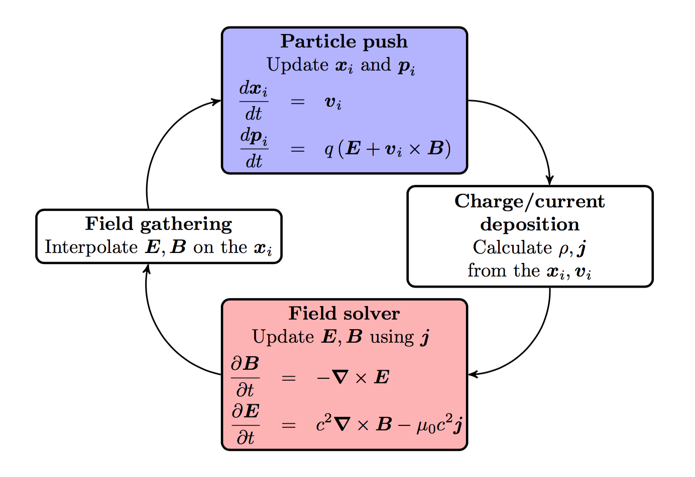
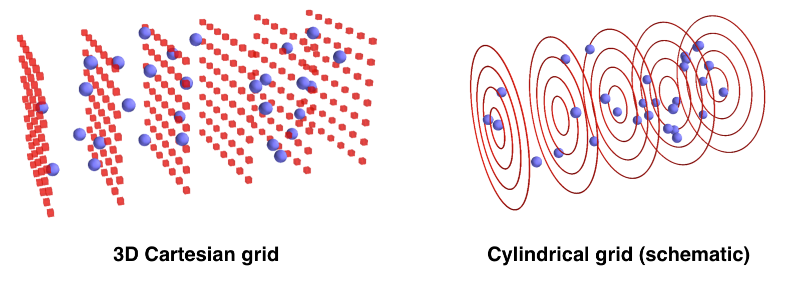
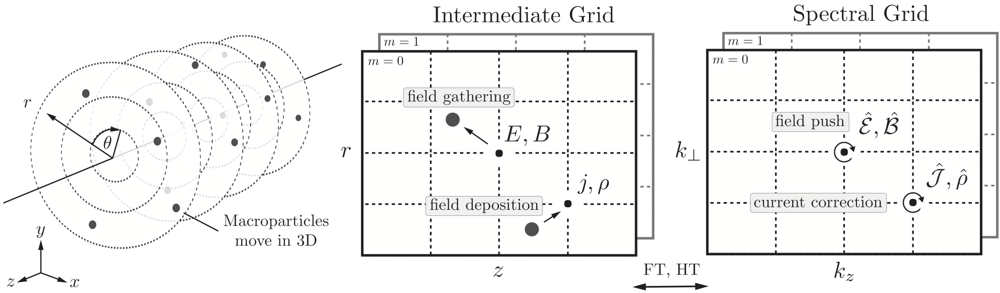

Overview of the code¶
Introduction to the PIC cycle¶
Like any electromagnetic PIC code, FBPIC simulates the self-consistent interaction of charged particles and electromagnetic fields.
The charged particles are represented by macroparticles (which lump together several physical particles), while the fields are represented on a grid. The time evolution of the system is simulated by taking discrete time steps. At each timestep:

- The values of E and B are gathered from the grid onto the macroparticles.
- The particles are pushed in time.
- The charge and current of the macroparticles are deposited onto the grid.
- The fields E and B are pushed in time.
The distinctive features of FBPIC¶
Cylindrical grid with azimuthal decomposition¶
In the standard PIC algorithm, the fields are represented on a 3D Cartesian grid. This is very generic, but also very computational expensive. For physical situations that have close-to-cylindrical symmetry, it is more efficient to use a cylindrical grid for the fields. This is represented below, with macroparticles in blue and the grid for the fields in red.
The above image is only a schematic view. In fact, instead of using a 3D Cartesian grid, FBPIC (and other PIC codes such as Calder Circ) use a set of 2D radial grids, as represented below. Each 2D radial grid represents an azimuthal mode (labeled by an integer \(m\)):
- The grid for \(m=0\) represents the fields that are independent of \(\theta\). (In idealized laser-wakefield acceleration, this is for instance the case for the wakefield.)
- The grid for \(m=1\) represents the fields that vary proportionally to \(\cos(\theta)\) and \(\sin(\theta)\). (In idealized laser-wakefield acceleration, this is the case of a linearly-polarized laser field, when expressed in cylindrical coordinates, as \(E_r\) and \(E_{\theta}\).)
- The grids for higher values of \(m\) represent the fields that vary proportionally to \(\cos(m\theta)\) and \(\sin(m\theta)\). These modes take into account further departures from the cylindrical symmetry.
For more details on the cylindrical representation with azimuthal decomposition, see the original paper of the PIC code Calder Circ.
Note
The user chooses the number of azimuthal modes used in an FBPIC simulation. Thus, you should make sure that you choose enough modes to resolve the physics at stake (e.g. typically 2 modes for idealized laser-wakefield acceleration - although non-linear effects such as self-injection may sometimes require 3 modes).
The fact that only a few 2D grids are used (one per azimuthal mode), instead of a full 3D grid, implies that the code uses vastly less memory, and runs faster by orders of magnitude compared to a 3D Cartesian code. Nonetheless, the computational cost of an FBPIC simulation does of course increase with the number of azimuthal modes used.
As suggested in the above image, the macroparticles deposit their charge and current on each radial grid, and gather the sum of the fields from each grid.
Note
Due to details of the algorithm, the charge deposition in the very first radial cell can be problematic if all the particles of this cell are on the axis instead of being roughly uniformly distributed over this cell.
Thus, always make sure that the radial resolution of your simulation is sufficient for the structures that are near the axis (e.g. electron beam) to be at least resolved by a few radial cells, so that the macroparticles are roughly uniformly distributed within the first cell.
Note
Because of the cylindrical representation, the macroparticles have different weights (i.e. they represent a different number of physical particles): e.g. macroparticles that were initialized far from the axis have a larger weight.
The diagnostics of an FBPIC simulation output the macroparticles along with their weights (denoted as w) ; be sure to take them into account in your post-analysis.
Analytical integration in spectral space¶
In the standard PIC algorithm, for the field solver, the spatial and time derivatives in the Maxwell equations are discretized using finite-difference. However, this can lead to several important numerical artifacts, including spurious numerical dispersion in the propagation of electromagnetic waves, and numerical growth of emittance for relativistic beams.
By contrast, FBPIC performs the field solve in spectral space, where the derivatives can be more precisely evaluated, and where Maxwell’s equations can be integrated analytically in time. This can make the algorithm dispersion-free in all directions. For more details on the algorithm and the artifacts that it avoids, see the original article of FBPIC (arxiv version here).
Note
Thanks to the above algorithm, the field solver in FBPIC has no Courant limit, and thus the timestep \(\Delta t\) can be chosen freely. In practice, it is common to choose \(\Delta t = \Delta z/c\) where \(\Delta z\) in the resolution along \(z\).
This means that, at each timestep, FBPIC transforms the fields to spectral space, advances them in time, and transforms them back to real space. Because of the cylindrical geometry, the spectral transformations consist of a Fourier transform along \(z\) and a Hankel transform along \(r\).
Note
While the computational cost of the Fourier transform scales as \(N_z \log(N_z)\), the cost of the Hankel transform scales as \(N_r^2\). Thus, be aware that, when using a large number of gridpoints along \(r\) (\(N_r\sim 1000\)), the Hankel transforms may dominate the computational time.
Centering in time and space¶
While, in the standard PIC algorithm, the fields are staggered in space and time, in FBPIC the fields are all defined at the same points in space and the same time (with the notable exception of the currents, which are staggered in time).
This allows to avoid important interpolation artifacts, which can produce for instance spurious forces for relativistic electrons copropagating with a laser (more details in the original article of FBPIC).